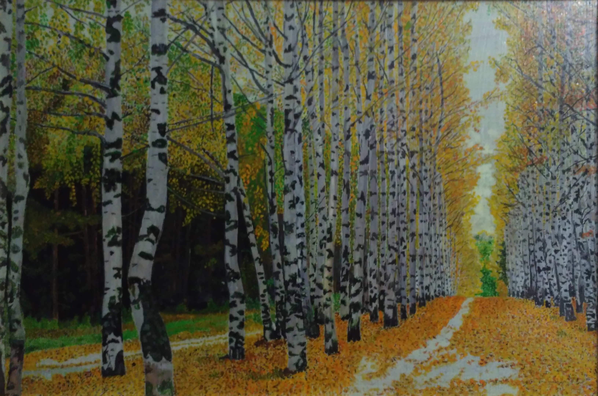

Осень
Лес, точно терем расписной, Лиловый, золотой, багряный, Веселой, пестрою стеной Стоит над светлою поляной. Березы желтою резьбой Блестят в лазури голубой, Как вышки, елочки темнеют, А между кленами синеют То там, то здесь в листве сквозной Просветы в небо, что оконца. Лес пахнет дубом и сосной, За лето высох он от солнца, И Осень тихою вдовой Вступает в пестрый терем свой… И.Бунин